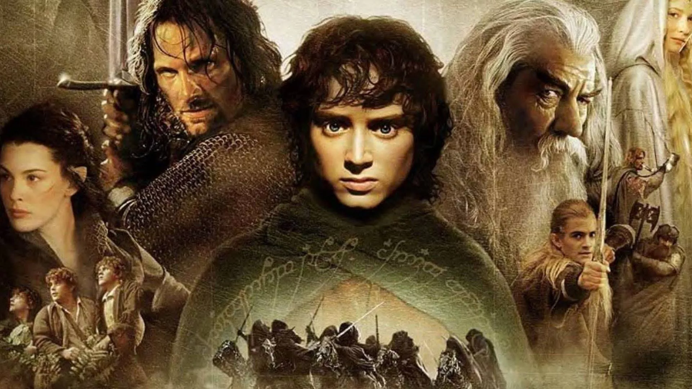

Na obra de J. R. R. Tolkien, Mordor é a região ocupada e controlada por Sauron, no sudeste do noroeste da Terra Média e ao leste do Anduin, o grande rio. Orodruin, um vulcão em Mordor, era o destino da Sociedade do Anel (e mais tarde Frodo Baggins e Samwise Gamgee) na missão de destruir o Um Anel.